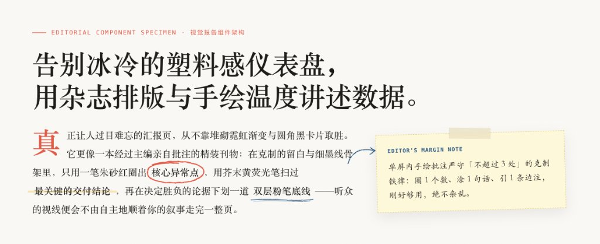
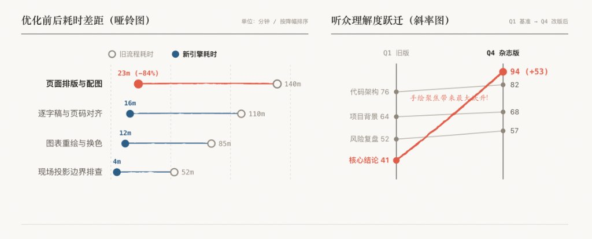

单文件离线可开 · A/D 或左右方向键翻页 · GSAP 动效 · 七套风格模板与杂志手绘组件库。


粉笔颗粒滤镜、不闭合手绘圆圈、哑铃图与斜率图，适合评审与汇报。
适合有截图、图解或实测数据，需要指给听众看细节的页面。
适合软件工程、系统架构、接口与代码讲解。
台面与纸片层次，适合个人项目、作品集与观点宣讲。
内置 17 套配色方案，适合课程汇报与创意项目。
适合结构、装配、状态对比与动作过程讲解。
适合科普、创意活动与非专业听众。
稿纸风完整成品，附配套逐字稿与验收记录。
完整多页叙事汇报页。
多色角色化色板成品演示。